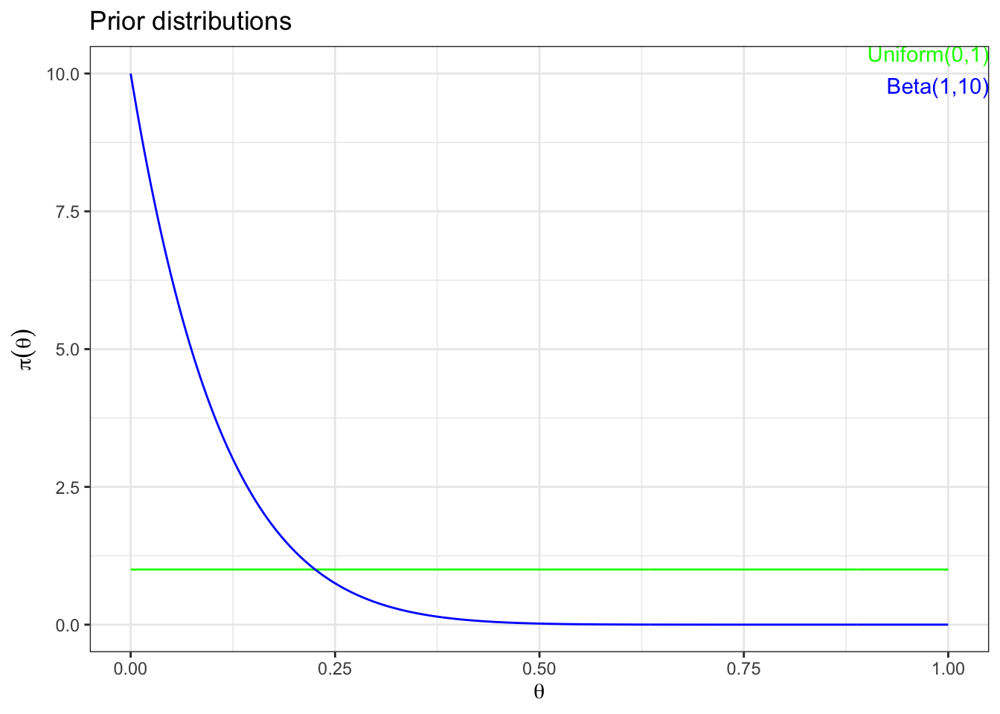

set.seed(1)
# simulate coin 100 coin tosses 1000 times
p <- 0.05
n <- 100
m <- 1000
data_results <- rbinom(n = m, size = n, prob = p) %>%
data.frame(y = .)
# draw boxplot of results
boxplot(data_results$y, main = "Number of heads", horizontal = TRUE)Setup
Experiment: we toss a coin 100 times and count the number of “heads” among the 100 tosses.
Now, suppose the coin we use is very biased, and the chance of having a “head” in such a toss is 0.05. Please simulate the experiment of 100 tosses with this coin for 1000 times and analyze the outcome using Bayesian.
Part a – Experiment
Draw a boxplot of the 1000 different experiment outcomes; does this plot match what you expected? Why or why not?
The boxplot is more or less what I expected, the median is very close the the expected number of heads out of 100 tosses. Perhaps expected it to be more right skewed because the true population proportion is so small.
Part b – Frequentist confidence interval
Find the 95% interval estimates of the parameter using frequentist approach with each of the 1000 simulated experiment (approximate z-CI of the population proportion):
\(\hat{p} \pm Z_{\alpha/2} \sqrt{\frac{(\hat{p}(1 - \hat{p})}{n}}\)
Among the 1000 simulations, what is the proportion of CIs including the true proportion p = 0.05? Calculate the average width of the 1000 CIs.
# define function to calculate margin of error
calc_moe <- function(p_hat, n, c) {
qnorm((1 - c) / 2, lower.tail = FALSE) * sqrt(p_hat * (1 - p_hat) / n)
}
# calculate 95% frequentist confidence interval
c <- 0.95
data_results %<>%
mutate(p_hat = y / n,
bound_lower = p_hat - calc_moe(p_hat, n, c),
bound_upper = p_hat + calc_moe(p_hat, n, c),
capture = bound_lower < p & bound_upper > p)
# display first few CIs
data_results %>% display_nice(n = 5)| y | p_hat | bound_lower | bound_upper | capture |
|---|---|---|---|---|
| 4 | 0.04 | 0.002 | 0.078 | TRUE |
| 4 | 0.04 | 0.002 | 0.078 | TRUE |
| 5 | 0.05 | 0.007 | 0.093 | TRUE |
| 8 | 0.08 | 0.027 | 0.133 | TRUE |
| 3 | 0.03 | -0.003 | 0.063 | TRUE |
# nest results
data_results %<>%
mutate(i = row_number(),
.before = y) %>%
nest(ci_freq = c(p_hat, bound_lower, bound_upper, capture))
head(data_results, n = 5)# calculate capture rate
data_results$ci_freq %>%
reduce(bind_rows) %>%
summarize(avg_width = mean(bound_upper - bound_lower),
capture_rate = mean(capture))Part c – Bayesian interval
Based on the resulting posterior distribution, find the 95% Bayesian interval estimates (use equal tail) of the parameter using a uniform (0, 1) prior of the parameter for each of the 1000 simulated experiment; Among the 1000 simulations, what is the proportion of CIs including the true proportion p = 0.05? Calculate the average width of the 1000 CIs.
Derivation of posterior distributions. Additionally includes the posterior mean as the theoretical point estimate.
# calculate point estimate (posterior mean) and 95% equal tails interval
# -> using uniform(0,1) = beta(1,1) prior
alpha <- 1
beta <- 1
data_results %<>% mutate(post_mean = (y + 1) / (n + alpha + beta),
bound_lower = qbeta((1 - c)/2, shape1 = y + alpha, shape2 = (n + beta) - y),
bound_upper = qbeta(1 - (1 - c)/2, shape1 = y + alpha, shape2 = (n + beta) - y),
capture = bound_lower < p & bound_upper > p)
# display first few CIs
data_results %>%
select(-ci_freq) %>%
display_nice(n = 5)| i | y | post_mean | bound_lower | bound_upper | capture |
|---|---|---|---|---|---|
| 1 | 4 | 0.049 | 0.016 | 0.098 | TRUE |
| 2 | 4 | 0.049 | 0.016 | 0.098 | TRUE |
| 3 | 5 | 0.059 | 0.022 | 0.112 | TRUE |
| 4 | 8 | 0.088 | 0.042 | 0.150 | TRUE |
| 5 | 3 | 0.039 | 0.011 | 0.084 | TRUE |
# nest results
data_results %<>%
nest(ci_bayes_uniform = c(post_mean, bound_lower, bound_upper, capture))
head(data_results, n = 5)# calculate capture rate
data_results$ci_bayes_uniform %>%
reduce(bind_rows) %>%
summarize(avg_width = mean(bound_upper - bound_lower),
capture_rate = mean(capture))Part d – Comparison
Compare your results in parts b and c, how similar are they? How different are they?
Average width of the frequentist interval is smaller than that of the equal tails Bayes interval, which implies the capture rate should be higher for the latter. However it is quite a bit higher.
Part e – New prior
Repeat part d using a Beta(1, 10) prior of the parameter \(p\).
# calculate point estimate (posterior mean) and 95% HPD interval
# -> using beta(1,10)
alpha <- 1
beta <- 10
data_results %<>% mutate(post_mean = (y + 1) / (n + alpha + beta))
# TeachingDemos::hpd() not working in mutate()
data_results$bound_lower <- data_results$y %>% map(function(y) {
TeachingDemos::hpd(qbeta, shape1 = y + alpha, shape2 = (n + beta) - y, conf = 0.95)[1]
})
data_results$bound_upper <- data_results$y %>% map(function(y) {
TeachingDemos::hpd(qbeta, shape1 = y + alpha, shape2 = (n + beta) - y, conf = 0.95)[2]
})
data_results %<>% mutate(across(c(bound_lower, bound_upper), as.double), # simplify result type
capture = bound_lower < p & bound_upper > p)
# display first few CIs
data_results %>%
select(-c(ci_freq, ci_bayes_uniform)) %>%
display_nice(n = 5)| i | y | post_mean | bound_lower | bound_upper | capture |
|---|---|---|---|---|---|
| 1 | 4 | 0.045 | 0.011 | 0.084 | TRUE |
| 2 | 4 | 0.045 | 0.011 | 0.084 | TRUE |
| 3 | 5 | 0.054 | 0.017 | 0.096 | TRUE |
| 4 | 8 | 0.081 | 0.034 | 0.132 | TRUE |
| 5 | 3 | 0.036 | 0.007 | 0.071 | TRUE |
# nest results
data_results %<>%
nest(ci_bayes_beta = c(post_mean, bound_lower, bound_upper, capture))
head(data_results, n = 5)# calculate capture rate
data_results$ci_bayes_beta %>%
reduce(bind_rows) %>%
summarize(avg_width = mean(bound_upper - bound_lower),
capture_rate = mean(capture))Part f – Final comparison
Compare your results in parts b, c and e. How different are they? How similar are they? Why would you see these differences?
# display all summaries at same time
data_results %>%
select(starts_with("ci")) %>%
map(\(col) reduce(col, bind_rows)) %>%
map2(c("freq", "bayes_uniform", "bayes_beta"),
\(df, nm) summarize(df, avg_width = mean(bound_upper - bound_lower) %>% round(3),
capture_rate = mean(capture)) %>%
mutate(method = nm,
.before = 1)) %>%
reduce(bind_rows)Bayes beta(10,1) resulted in the smallest intervals on average, which makes sense because the prior distribution incorporated good knowledge of the true population proportion. It also had a capture rate almost as high as the, on average, wider confidence intervals from the Bayes with uniform prior.
Part g – Additional insightful plots
Comparison of priors.
# compare different prior distributions for the Bayesian credible intervals
ggplot() +
geom_line(aes(x = seq(from = 0, to = 1, by = 0.001),
y = dunif(seq(from = 0, to = 1, by = 0.001), min = 0, max = 1)),
color = "green") +
geom_line(aes(x = seq(from = 0, to = 1, by = 0.001),
y = dbeta(seq(from = 0, to = 1, by = 0.001), shape1 = 1, shape2 = 10)),
color = "blue") +
annotate("text",
x = Inf, y = Inf,
hjust = 1, vjust = 1,
label = "Uniform(0,1)",
color = "green") +
annotate("text",
x = Inf, y = Inf,
hjust = 1, vjust = 3,
label = "Beta(1,10)",
color = "blue") +
labs(title = "Prior distributions",
x = expression(theta),
y = expression(pi(theta)))
Comparison of point estimates (\(\hat{p}\) for frequentist and \(E(\theta \mid y)\) for Bayes).
# comparative boxplots of point estiamtes
data_results %>%
select(starts_with("ci")) %>%
map(\(col) reduce(col, bind_rows)) %>%
map2(c("freq", "bayes_uniform", "bayes_beta"),
\(df, nm) select(df, pe = 1) %>% # select and rename point estimate
mutate(method = nm,
.before = 1)) %>%
reduce(bind_rows) %>%
ggplot(aes(x = pe, y = method)) +
geom_boxplot() +
geom_vline(xintercept = p,
col = "blue") +
annotate("text",
x = Inf, y = -Inf,
hjust = 1, vjust = -1,
label = "true parameter",
color = "blue") +
labs(x = "Point estimate")